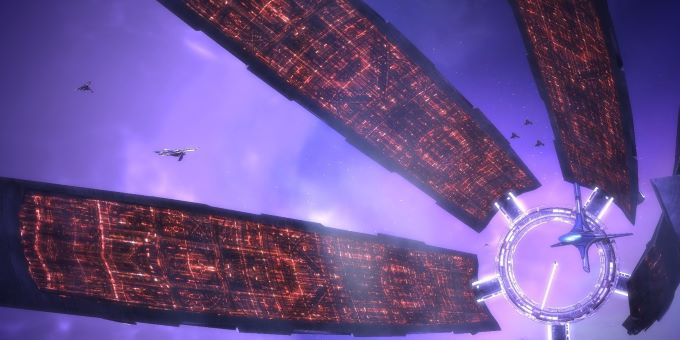

Історія випуску
Спочатку гра була розроблена лише для Xbox 360. Реліз для цієї платформи відбувся 20 листопада 2007 року. Версія для ПК вийшла 28 травня 2008 року. У комп'ютерній версії було покращено графіку, а також адаптовано керування для клавіатури та миші.
Локалізовану російську версію для ПК було випущено 6 червня 2008 року. Локалізацією займалася студія Snowball, а видавцем виступила компанія "1С". У цьому виданні було збережено оригінальне озвучення. У березні 2009 року планувався випуск повністю локалізованого «золотого» видання (з російським озвученням), що включає доповнення «Загибель з небес», проте його реліз було перенесено на осінь того ж року.
5 грудня 2012 року було випущено цифрову англійську версію для PS3, що розповсюджується через цифровий магазин PSN. Вона також включає доповнення "Загибель з небес".
Геймплей
За стилем гра нагадує інші ігри BioWare , такі як Star Wars: Knights of the Old Republic (KOTOR) та Jade Empire . На відміну від KOTOR, гравець безпосередньо керує діями персонажа. Гравець може вибирати двох компаньйонів для кожного завдання, причому вибір можна змінити лише повернувшись на корабель (у KOTOR і Jade Empire це можна було зробити майже в будь-який момент).
Так само, як і у вищезгаданих іграх, у Mass Effect є деяка подоба магії. Особливі індивіди ( біотики ) мають уроджену здатність керувати локальними гравітаційними полями, що виявляється у наявності в деяких персонажів різноманітних навичок телекінетичного характеру.
Під час бою гравець може увійти в тактичне меню (гра при цьому припиняється), в якому можна змінити зброю (собі або компаньйонам) або вказати, яку з можливостей використовувати. Також можна вибрати мету для будь-якої здібності (своєї або компаньйонів). Кожна здатність має свою шкалу «зарядки», тому гравець може використовувати кілька здібностей поспіль. Наприклад, можна використовувати здатність «підняти» і потім «кинути» ворога, що безпорадно борсається в повітрі, в протилежну стіну.
Бойова система
У битвах бере участь Шепард , яким управляє сам гравець, а також два супутники. Бої відбуваються у реальному часі. Управління персонажами здійснюється від третьої особи з камерою, закріпленою за плечем керованого персонажа.
У грі є п'ять категорій зброї : штурмові гвинтівки , дробовики , пістолети , снайперські гвинтівки та гранати . Зброя (крім гранат) має нескінченний боєзапас, але швидко перегрівається, через що періодично потрібно робити паузи між стріляниною.
Істотну роль також відіграє броня , яка представлена трьома типами легка, середня і важка, кожна з яких має свої переваги та недоліки. Наприклад, легка броня завжди робиться з упором на захист від технічної та біотичної шкоди, але має поганий фізичний захист і слабкі щити, а важка броня ефективна в основному проти фізичної шкоди і має потужні щити. Кожному класу доступний лише певний рівень броні – наприклад, важка броня доступна лише солдатові . Броня різна для всіх видів, але для азарі , через подібну статуру, доступна броня людей. Для всього озброєння є гнучка система поліпшень.
Крім використання різних типів зброї, гравець може боротися з противниками врукопашну або використовувати біотику. Шепард і його (її) союзники захищені силовими щитами, що поглинають збитки. Після певної кількості влучень, енергія щита вичерпується, і тоді наступна шкода забирає безпосередньо окуляри здоров'я. Енергія щита відновлюється автоматично, якщо деякий час персонаж не піддавався атакам, здоров'я ж відновлюється лише з допомогою панацеліну чи відповідної навички . Якщо союзники гинуть, вони автоматично воскресають після закінчення бою, з допомогою панацеліну їх теж можна знову підняти на ноги, проте гра закінчується, якщо гине Шепард. У такому випадку гра завантажується з останнього збереження.
Вороги мають окуляри здоров'я, а також можуть бути захищені щитами. Гравець може використовувати спеціальні здібності, що тимчасово виводять ворога з ладу або піднімають у повітря. Інші навички дають бонуси самому гравцю, наприклад, підвищуючи його опірність. Спеціальні здібності можна використовувати необмежену кількість разів, проте вони мають індивідуальний час перезарядки.
Класи
Існує шість ігрових класів (для людей), три з яких базові, і три змішані:
- Солдат - бойовий фахівець, який вміє добре поводитися з усіма видами зброї, а також носити важку броню. Немає біотичних здібностей.
- Інженер - спеціаліст з технологій. Використовує голографічний уні-інструмент для злому систем безпеки, ремонту обладнання, відключення ворожої зброї та силових полів, а також лікування союзників. Немає біотичних здібностей.
- Адепт - спеціаліст-біотик. Чи не навчений використовувати важке озброєння, але має широкий арсенал потужних біотичних здібностей.
- Розвідник - клас, що поєднує якості солдата та інженера. Більше зосереджені використання технічних здібностей, ніж лікуванні. Може носити легку та середню броню та поводитися зі снайперською гвинтівкою та пістолетом.
- Штурмовик - суміш солдата та адепта. Смертоносний у ближньому бою, оскільки може добре поводитися з дробовиками і використовувати основні біотичні здібності.
- Страж - суміш інженера та адепта. Не має гарного бойового вишколу, найбільш корисний як підтримка. Краще пристосований для біотичних чи технічних робіт.
У першій частині Mass Effect після завершення необов'язкового завдання на Місяці гравець отримує можливість додати персонажу спеціалізацію класу:
- Захисник (Бастіон) – майстер із використання біотичних здібностей для оборони; може завдавати шкоди ворогам, що у стазовому полі. Доступний для адептів та вартових.
- Спецназівець - відмінно поводиться з будь-якою можливою зброєю. Доступний для солдатів та розвідників.
- Санітар — талановитий медик, здатний вилікувати навіть найсерйозніші рани. Доступний для інженерів та вартових.
- Месник (Немезида) - бойовий біотик, що спеціалізується на руйнівних біотичних здібностях. Доступний для адептів та штурмовиків.
- Агент – висококласний сапер. Доступний для інженерів та розвідників.
- Ударний боєць – солдат, завдання якого – пережити ворога. Доступний для солдатів та штурмовиків.
Інопланетяни також мають свої індивідуальні класи, які є варіаціями вищезгаданих. Тобто кроганський бойовий майстер , по суті, той самий штурмовик, але може одягати важку броню і використовувати будь-яку зброю. Інші класи інопланетян: вчений азарі , технік-кваріанець та туріанський агент.
Інвентар
Ключові особливості - нескінченна кількість набоїв та обмеження тривалості стрілянини у зв'язку з перегріванням зброї.
Озброєння
Ключові особливості - нескінченна кількість набоїв та обмеження тривалості стрілянини у зв'язку з перегріванням зброї.
Штурмові гвинтівки
Штурмові гвинтівки відрізняються збалансованим набором якостей, серед яких значна вогнева міць, гарна прицільність та точність стрілянини. Тому вони входять до стандартного комплекту спорядження більшості солдатів. Навчатися навичок володіння штурмовими гвинтівками можуть солдати.
Дробовики
Дробовикам властиві низька скорострільність та висока віддача. У той же час вони здатні завдавати значної шкоди декільком цілям на короткій дистанції. Навчатися навички володіння дробовиками можуть солдати та штурмовики.
Пістолети
Пістолети відрізняються високою точністю стрілянини, низькою віддачею та зручністю ведення бою у русі. Ефективні на різних дистанціях, але завдають невеликої шкоди. Навчатися навичок володіння пістолетами можуть солдати, інженери, адепти, штурмовики та розвідники.
Снайперські гвинтівки
Снайперським гвинтівкам властиві висока прицільна дальність, точність і значні втрати. У той же час мають низьку скорострільність і практично марні на коротких дистанціях. Навчатися навички володіння снайперськими гвинтівками можуть солдати та розвідники.
Гранати
Гранати Альянсу відрізняються особливою формою, що дає їм змогу покривати значні відстані в польоті. Гранати розроблені таким чином, що можуть прикріплюватися до плоских поверхонь і предметів, що рухаються. Гранату можна підірвати дистанційно, або вона вибухне автоматично через 10 секунд після кидка.
Броня
Доступно три типи броні: легка, середня та важка. Кожна з категорій має свої переваги та недоліки. Кожному класу доступний лише певний рівень броні. Наприклад, лише солдат може надягати важку броню. Броня різна для всіх рас, оскільки величезний кроган не влізе в броню, призначену для людини. Люди та азарі можуть використовувати однакову броню через схожу статуру.
Техніка
Окрім піших завдань, доступні місії «на колесах» — часто доводиться використовувати для пересування поверхнями планет важковозброєний бронетранспортер-всюдихід M35 «Мако» . Ця унікальна машина може забиратися навіть практично вертикальними скелями і горами, а також легко переносить падіння з великих висот завдяки елементу 0 (представленому в ігровому всесвіті як нульовий елемент таблиці Менделєєва), на основі якого побудовано багато інших технологій гри. Бронетранспортер озброєний гарматою 155 мм (в оригіналі «прискорювачем маси калібру 155 мм») та кулеметом на турелі.
Сюжет
2183 рік
Капітан Шепард , приписаний до експериментального корабля «Нормандія SR-1» , що підпорядковується Альянсу систем , вирушає на завдання, метою якого є доставити артефакт стародавньої цивілізації протеан , знайдений археологами на одній із людських колоній Іден Прайм , на одну з центральних. Під час виконання завдання область археологічних розкопок зазнає атак гетів — раси розумних роботів, які також намагаються захопити артефакт. При контакті з артефактом Шепард бачить певне бачення апокаліптичного характеру. Під час подальших подорожей Шепард розуміє, що бачення є ознакою майбутнього. На своєму шляху він зустрічає представників інопланетних рас, які згодом приєднуються до команди.
Шепард отримує завдання нейтралізувати туріанця Сарена , колишнього Спектра - члена елітного підрозділу, покликаного захищати Галактичну раду будь-якими методами. Сарену якимось чином вдалося укласти союз із гетьами. З їхньою допомогою він бажає прискорити повернення стародавньої кібернетичної раси Жнєцов (в іншому перекладі — Пожинателей), яка, згідно з легендами, має знищити все розумне життя в Галактиці.
Світ гри
Раси
У грі представлені практично всі найрозвиненіші й фігурованіші в книгах раси. При цьому достовірно відомо, що на момент дії гри в Галактиці відомо про більшу кількість рас.
- Азарі - одностатеві гуманоїди з розвиненими біотичними здібностями. Саме вони виявили Цитадель та заснували Раду Цитаделі.
- Батаріанці - раса чотириоких гуманоїдів, чия соціальна структура дуже схожа на людську, але при цьому в їхньому суспільстві домінують кримінальні синдикати. Є основними політичними суперниками Альянсу громадян.
- Волуси - негуманоїдна низькоросла раса, що знаходиться під протекторатом Туріанської Ієрархії в обмін на захист та стабільність. Є відмінними підприємцями та авторами основ галактичної економіки.
- Гети - раса синтетичних розумних істот, створених понад 300 років тому кваріанцями для ролі робітників та солдатів. У певний момент гети відмовилися підкорятися господарям, у результаті розпочалася війна. Здобувши перемогу над творцями, гети пішли в самоізоляцію, всі спроби контакту з ними увінчалися невдачею.
- Кваріанці - раса гуманоїдів-кочівників, що блукають Галактикою. Ще кілька століть тому кваріанці були однією з найрозвиненіших рас і мали свої планети, але звідти їх вигнали повсталі гети, знищивши більшість представників цієї раси. Кваріанці ходять у закритих скафандрах і не відкривають осіб, оскільки їхня імунна система практично не функціонує.
- Крогани - великі двоногі рептилоїди, що є найвойовничішою з відомих рас. Під час конфлікту між кроганами і расами простору Цитаделі проти них була використана біологічна зброя — генофаг , яка стерилізувала більшість населення (тільки одна дитина з 1000 народжується живою). Крогани - вид, що вимирає.
- Люди — найрозвиненіша версія сучасного людства. Вийшли до Галактики порівняно недавно в результаті величезного технологічного стрибка після виявлення складу технологій протеан на Марсі . Люди вважаються найагресивнішою расою після кроганів.
- Жнеці — кібернетична раса, що час від часу з'являється, щоб збирати «врожай» з розумного органічного життя. Між «жнивами» Жнеці перебувають у сплячці в міжгалактичному просторі, чекаючи сигналу на пробудження, коли рівень розумного життя в Галактиці досягне потрібної величини.
- Протеани - давня вимерла раса. Була дуже розвинена технологічно. Вважається, що якби протеани не залишили безліч артефактів, більшість галактичних рас ніколи не залишили б свої зоряні системи. Протеани зникли 50 000 років тому.
- Рахні - вимерла інсектоїдна раса, яка погрожувала знищити раси простору Цитаделі приблизно 2000 років тому. Вони були переможені та знищені кроганами.
- Істоти світла — зважаючи на все, це вид, створений у давнину для боротьби з «пекельними машинами» (найвірогідніше, під «пекельними машинами» мають на увазі Жнєцов).
- Торіанін - рослинна форма життя, здатна захоплювати тіла органіків, використовуючи особливі суперечки. Ця істота давніша за протеан. Весь цей час воно залишалося потайливим, стежачи і вивчаючи те, що відбувається навколо. Невідомо, чи існує більше однієї особи виду або ж торіанін з Фероса єдиний.
- Саларіанці - гуманоїдна раса, найбільш технологічно розвинена в Галактиці. Через прискорений метаболізм термін життя зазвичай обмежується 40 роками. Саларіанці входять до Ради Цитаделі
- Туріанці - раса, що походить від птахів. Досвідчені, холоднокровні бійці, якими править суворий кодекс честі та дисципліни. Є третьою расою Ради Цитаделі та мають найбільший флот у Галактиці. Туріанці стали першою расою інопланетян, з якими зіткнулися люди.
- Ханари – медузоподібна водна раса. Ханари живуть у теократичному суспільстві та поклоняються протеанам. Через релігійність, а також соціальні особливості у ханарів часто виникають проблеми у спілкуванні з іншими расами, які не розуміють їх правил і манер поведінки.
- Охоронці — істоти, що мешкають лише на станції Цитадель. Коли азарі вперше виявили Цитадель, охоронці вже були там. За формою вони нагадують комах. По суті, це органічні машини, які не вміють спілкуватися, чия функція підтримувати працездатність Цитаделі. Існує неписаний закон про невтручання у роботу зберігачів.
- Елкори – негуманоїдна раса фізично дуже сильних істот. Елкор все роблять дуже довго і розмірено. Основний спосіб їх спілкування – передача феромонів, тому при спілкуванні з іншими расами елкори передають свої емоції та інтонацію словами.
Локації та астрографія
Цитадель — космічна станція, побудована Жнецами разом із розвиненою мережею ретрансляторів маси з метою прив'язати до цієї мережі розвиток розумного життя, щоб надалі одним скоординованим ударом знищити це розумне життя.
Персонажі
-
Команда Шепард(а)
- Капітан Шепард – головний герой. Перша людина, що удостоїлася носити звання Спектра . Як польовий агент, Шепард має повноваження виконувати свої завдання у будь-який спосіб. На початку гравець може вибрати зовнішній вигляд, стать, передісторію та клас персонажа. Залежно від обраної історії змінюється перебіг подій, манера поведінки персонажа. Оскільки Mass Effect - гра з повністю озвученими діалогами, можна вибрати лише ім'я персонажа, прізвище залишиться без змін.
- Ешлі Вільямс - людина-солдат. Красива дівчина, яка вміє постояти за себе. Персонаж-чоловік може завести з нею роман. Не любить інопланетян, можливо через те, що її дід брав участь у війні Першого контакту і здав туріанцям колонію Шаньсі , за що його з ганьбою розжалували, а до членів сім'ї Вільямс з тих пір ставляться з недовірою у військах Альянсу.
- Доктор Ліара Т'Соні - компаньйон-азарі, археолог-фахівець з протеанських технологій. Дочка матріарха Бенезії . Персонаж будь-якої статі може завести роман із Ліарою.
- Кайден Аленко – людина-страж, помічник Шепард(а). Один з перших людей з біотичними здібностями, що навчався на станції Гагарін . Персонаж жінка може завести з ним роман.
- Гаррус Вакаріан - туріанець, колишній агент Служби Безпеки Цитаделі . Пішов у відставку, розчарувавшись у надмірно бюрократичному механізмі своєї організації.
- Урднот Рекс — один із останніх кроганів рангу «бойовий майстер». Ці рідкісні індивіди можуть поєднувати біотичні здібності з високими технологіями, а також блискуче поводяться зі зброєю. Незважаючи на свій загрозливий вигляд, Рекс рідко втрачає самовладання і дуже розсудливий. Він також вважає за краще багато не говорити.
- Талі'Зора нар Райя — молода кваріанка, яка під час ритуального паломництва виявила доказ зради Сарена. Як і всі кваріанці, Талі відмінно розуміється на будь-якій техніці.
-
Екіпаж «Нормандії»
- Девід Андерсон - командир корабля "Нормандія" і головний персонаж роману-приквела " Mass Effect: Відкриття ", в якому він зустрівся з Сареном. Наставник та радник Шепард(а). Після зарахування Шепард(а) до лав Спектров добровільно передає йому командування «Нормандією».
- Джефф "Джокер" Моро - пілот "Нормандії". Незважаючи на свою вроджену крихкість кісток (синдром Вролика), є найкращим пілотом Альянсу.
- Чарльз Преслі – заступник Шепард(а) на борту «Нормандії». Преслі не до вподоби присутність інопланетян на передовому кораблі Альянсу.
- Інженер Адамс – головний інженер на борту «Нормандії». Досвідчений офіцер, який служив різних кораблях Альянсу. Останнє місце роботи – крейсер «Токіо».
- Річард Дженкінс - солдат, родом з Іден Прайм. Не має реального бойового досвіду, тому всіма силами намагається потрапити на справжню справу.
- Доктор Чаквас – головний медичний офіцер «Нормандії». Любить працювати далеко від цивілізованого космосу. Доктор Чаквас віддає перевагу повному життю роботи серед солдатів у Галактиці більш спокійній роботі в якійсь людській колонії.
-
Основні супротивники
- Сарен Артеріус - колишній Спектр-туріанець. Відомий своїми жорстокими методами роботи та видобутку інформації. Глибоко ненавидить людей, можливо через загибель брата у війні Першого контакту. Після подій роману-приквела Сарен укладає союз із гетьами і знаходить «Володаря». Він є основним антагоністом гри.
- Матріарх Бенезія - азарі-матріарх, яка перебуває у союзі з Сареном. Матері Ліари.
- "Володар" - корабель Сарена. Як стає відомо в міру проходження гри, «Володар» — не космічний корабель, а представник стародавньої кібернетичної раси Жнєцов, здатний брати під свій контроль розум органічних істот.
-
Представники інших рас
- Найлус Крайк – відомий Спектр-туріанець. Сарен був його наставником. Найлус добре вміє скористатися слабкостями ворога і завжди залишається холоднокровним, хоча його способи далекі від жорстокості Сарена.
- Ша'іра — представниця раси азарі, яку багато хто вважає оракулом. Професія — Супутниця, надає своїм клієнтам будь-які послуги, найчастіше певного характеру.
- Барла Вон – представник раси волусів, фінансовий консультант, який працює у банку фінансового району Президії. Вона має великий досвід у справах по переміщенню великих сум грошей, тому він охоче продає свої послуги еліті Цитаделі. Реальною ж роботою Барла Вона є торгівля інформацією. Є агентом Сірого Посередника .
Цікаві факти
- На озвучування персонажів було запрошено безліч голосових та кіноактерів, включаючи Сета Гріна (Джефф «Джокер» Моро) та Ланса Хенріксена (Стівен Хакет).
- Навколо сексуальної сцени у грі в американських мас-медіа спалахнув скандал, у якому критики звинуватили видавців гри в пропаганді порнографії та неповаги до жінок серед дітей та підлітків. Згодом, особисто ознайомившись із грою, критики принесли публічні вибачення ігровому співтовариству.
-
Цікаво, що назва Mass Effect спало на думку розробникам далеко не відразу. Спочатку перша частина називалася Science Fiction X, але цей варіант автори не розглядали як фінальний.
- По-перше, звучить не дуже, по-друге, перегукується з назвою науково-фантастичного журналу SFX, що виходить в Англії з 1995 року. Альтернатив назві було запропоновано близько десятка, а саме словосполучення Mass Effect було вигадане вже колишнім засновником Bioware Грегом Зещуком, який покинув студію у 2012 році. За словами самих розробників, ця назва «не остогидла їм у ту саму хвилину, як траплялося з іншими варіантами, а це була вірна ознака того, що вдалося знайти щось варте» .
-
Ім'я одного з героїв гри, капрала Річарда Л. Дженкінса, є відсиланням до імені одного з найвідоміших гравців у MMORPG World of Warcraft Бена Шульца, який грає під ім'ям Лірою Дженкінс.
- Також характер капрала Дженкінса та його загибель пов'язані з персонажем Шульца, який скандально прославився через це на весь світ.
- Ім'я іншого героя, Ешлі Вільямс, — відсилання до персонажа кінотрилогії «Зловісні мерці» Ешу Вільямсу.
- Як паливо раси використовують гелій-3 - реально існуючий ізотоп гелію, що пропонується до використання в міжзоряних переміщеннях.